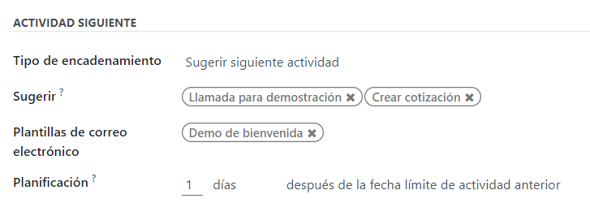
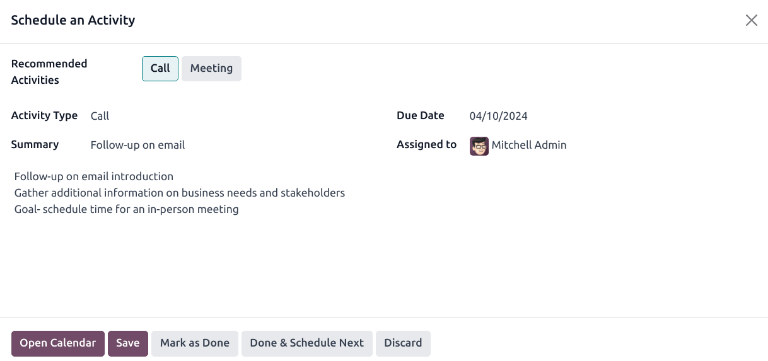

Utilizar actividades para los equipos de ventas¶
Las actividades son tareas de seguimiento vinculadas a un registro en una base de datos de Odoo. Estas se pueden programar desde cualquier página de la base de datos que tenga un hilo del chatter, una vista de kanban, una vista de lista o una vista de actividades de una aplicación.
Actividades planificadas para leads y oportunidades.¶
Tipos de actividades¶
La aplicación CRM cuenta con un varios tipos de actividad preconfigurados, para ver la lista vaya a .
Nota
Hay otros tipos de actividad disponibles en la base de datos y puede utilizarlos en diferentes aplicaciones. Para acceder a la lista completa de tipos de actividad, vaya a , diríjase a la sección Conversaciones y haga clic en Tipos de actividad.
Los tipos de actividad preconfigurados para la aplicación CRM son los siguientes:
Correo electrónico: agrega un recordatorio al chatter para indicarle al vendedor que debe enviar un correo electrónico.
Llamada: abre un enlace de calendario donde el vendedor puede programar una hora para llamar al contacto.
Reunión: abre un enlace de calendario donde el vendedor puede programar una hora para reunirse con el contacto.
Por hacer: agrega una tarea de recordatorio general al chatter.
Subir documento: agrega un enlace en la actividad donde es posible subir un documento externo. Tenga en cuenta que la aplicación Documentos no es necesaria para utilizar este tipo de actividad.
Nota
Si instala otras aplicaciones, como Ventas o Contabilidad, habrá otros tipos de actividad disponibles en la aplicación CRM.
Crear un nuevo tipo de actividad¶
Para crear un nuevo tipo de actividad haga clic en el botón Nuevo ubicado en la parte superior izquierda de la página, esta acción abrirá un formulario vacío.
Primero, en la parte superior del formulario, elija un nombre para el nuevo tipo de actividad.
Ajustes de actividad¶
Acción¶
El campo Acción especifica el propósito de la actividad. Algunas acciones activarán comportamientos específicos después de programar una actividad.
Si selecciona Subir documento. se agregará un enlace para subir un documento directamente a la actividad planeada en el chatter.
Si selecciona Llamada o Junta los usuarios tendrán la opción de abrir su calendario para agendar esta actividad.
Si selecciona Solicitar firma se agregará un enlace en el chatter de la actividad planeada. Al hacer clic en este enlace se abrirá una ventana emergente para solicitar la firma.
Nota
Las acciones disponibles que puede seleccionar en el tipo de actividad varían dependiendo de las aplicaciones que tienen en la base de datos.
Usuario predeterminado¶
Para asignar esta actividad a un usuario específico de manera automática al programar este tipo de actividad, seleccione un nombre desde el menú desplegable Usuario predeterminado. Si este campo se deja en blanco, se asignará una actividad al usuario que cree la actividad.
Resumen predeterminado¶
Para incluir notas al crear este tipo de actividad debe ingresarlas en el campo Resumen predeterminado.
Nota
La información en los campos Usuario predeterminado y Resumen predeterminado se incluye en la actividad creada. Sin embargo, se pueden alterar antes de que la actividad se programe o se guarde.
Siguiente actividad¶
Para sugerir o activar una actividad de manera automática después de que una actividad se marca como completada, se debe configurar el Tipo de encadenamiento.
Sugerir la siguiente actividad¶
En el campo Tipo de encadenamiento seleccione Sugerir siguiente actividad. Al hacerlo, el campo de abajo cambiará a Sugerir. Haga clic en este campo para seleccionar las actividades que recomienda como actividades que le sigan a este tipo de actividad.
En el campo Horario seleccione una fecha límite predeterminada para estas actividades. Para hacerlo, configure un número específico de Días, Semanas, o Meses. Después, decida si debe pasar después de la fecha de finalización o después de la fecha límite de actividad anterior.
Puede alterar la información del campo Horario antes de agendar la actividad.
Al completar todas las configuraciones, haga clic en Guardar.
Activar la siguiente actividad¶
Si configura el Tipo de encadenamiento a Activar siguiente actividad hara que la siguiente actividad se active de inmediato una vez que la actividad previa se termine.
Si selecciona Activar la siguiente actividad en el campo Tipo de encadenamiento, el campo de abajo cambiará a Activador. Desde el menú desplegable del campo Activador seleccione la actividad que se debería iniciar una vez que esta actividad se complete.
En el campo Horario seleccione una fecha límite predeterminada para estas actividades. Para hacerlo, configure un número específico de Días, Semanas, o Meses. Después, decida si debe pasar después de la fecha de finalización o después de la fecha límite de actividad anterior.
Puede alterar la información del campo Horario antes de agendar la actividad.
Al completar todas las configuraciones, haga clic en Guardar.
Nota
Cuando el tipo de encadenamiento de una actividad es Activar la siguiente actividad, al marcar la actividad como Lista, la siguiente actividad que aparece en el campo Activar iniciará de inmediato.
Seguimiento de actividades¶
Para mantener el flujo actualizado con la vista más precisa del estado de las actividades, tan pronto como se interactúe con un lead, es necesario que marque la actividad asociada como Hecho. Esto garantiza que pueda programar la siguiente actividad según sea necesario y también evita que el flujo se sature con actividades vencidas.
El flujo es más efectivo cuando está actualizado y en orden con las interacciones que está rastreando.
Planes de actividades¶
Los tipos de actividad con el tipo de encadenamiento configurado como Activar la nueva actividad permiten planificar con anticipación una secuencia de actividades personalizadas. Una vez que una actividad se marca como Hecho, la siguiente actividad se programa de forma automática.
La función tipo de encadenamiento de un tipo de actividad permite preparar una secuencia de eventos que pueden ser útiles en el proceso de ventas.
Example
Un vendedor agrega un nuevo lead a su flujo y programa una actividad de tipo Correo electrónico para el día siguiente. Este tipo de actividad de correo electrónico está configurado con los siguientes ajustes:
Tipo de encadenamiento:
Sugerir siguiente actividadSugerir:
Llamada,ReuniónProgramar:
2 días después de la fecha límite de la actividad anterior
Después de enviar un correo electrónico al lead, el vendedor hace clic en ¡Hecho! Prepare el siguiente en la ventana emergente de Programar pctividad. Esto abre una nueva ventana emergente donde aparecen las actividades sugeridas como recomendaciones para los siguientes pasos.
Las actividades sugeridas o activadas pueden variar según distintos factores. Consulte los siguientes ejemplos relacionados con algunas secuencias:
Un vendedor agrega un lead al flujo y programa una actividad de tipo Correo electrónico.
La actividad Correo electrónico sugiere programar una llamada o una reunión dentro de los dos días de la fecha límite anterior.
Las actividades Llamada y Reunión activan la actividad Crear cotización.
Después de enviar la cotización, la actividad Seguimiento a la cotización se programa para después de cinco días.
Un lead se agrega al flujo a través del formulario de contacto del sitio web. El gerente de ventas asigna un vendedor y programa una actividad para una llamada.
La actividad Llamada activa la actividad Subir documento para que el vendedor pueda enviar la propuesta después de la llamada.
La actividad de tipo Subir documento sugiere programar la actividad Solicitar firma o una reunión y el vendedor elige agendar una reunión.
Un gerente se da cuenta de que sus vendedores no le están proporcionando el seguimiento adecuado a sus leads y, como resultado, están perdiendo varios clientes valiosos.
El gerente crea un nuevo tipo de actividad con el nombre Seguimiento y lo configura con Recordatorio como tipo de Acción.
El gerente hace que Seguimiento sea la siguiente actividad activada o sugerida para todas las actividades de su equipo.
Después de que un vendedor planifique una actividad de correo electrónico, se programa una actividad de seguimiento para el día siguiente. Después de que programe una actividad de reunión, se programa una actividad de seguimiento para dos días después.
Ver también